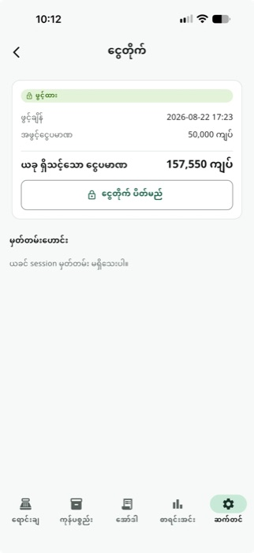

ဝန်ဆောင်မှုများ အားလုံး / ငွေတိုက် (Cash Register)
ငွေတိုက် (Cash Register)
Freeနေ့စဉ် Shift/Session အလိုက် ငွေတိုက်ထဲက ငွေသားကို ခြေရာခံနိုင်ပါတယ် — ဖွင့်ချိန် ကြေငြာငွေ၊ ရောင်းရငွေ၊ ကုန်ကျစရိတ်၊ ပြန်ဆပ်ငွေများကို "Expected cash" အဖြစ် Real-time တွက်ချက်ပြပေးပြီး၊ ပိတ်ချိန် အရေအတွက် ရေတွက်ပြီး ကွာဟမှု (Variance) ကို ချက်ချင်းစစ်ဆေးနိုင်ပါတယ်။
အဆင့်ဆင့် အသုံးပြုနည်း

ငွေတိုက် ဖွင့်ပါ
ဆိုင်ဖွင့်ချိန် "ငွေတိုက် ဖွင့်မည်" ကို နှိပ်ပြီး ကြေငြာအဖွင့်ငွေ ပမာဏ ရိုက်ထည့်ပါ။ Session ဖွင့်ထားစဉ်တစ်လျှောက် — ဖွင့်ချိန်၊ အဖွင့်ငွေ၊ "ယခု ရှိသင့်သော ငွေပမာဏ" (Expected cash = အဖွင့်ငွေ + ငွေသားရောင်းချမှု + ငွေသားပြန်ဆပ်ငွေ − ငွေသားကုန်ကျစရိတ်) ကို Live Card နဲ့ အမြဲပြသည်။
သိထားသင့်တဲ့ Tips
ငွေတိုက် ပိတ်ခြင်း — "ငွေတိုက် ပိတ်မည်" ကို နှိပ်ပြီး ရေတွက်ထားသောငွေကို ရိုက်ထည့်ရင်း Expected cash နှင့် ယှဉ်ပြီး "အတိအကျ ကိုက်ညီသည်" / "{amount} လျော့နေသည်" / "{amount} ပိုနေသည်" ကို Live Preview (အစိမ်း/အနီ) ဖြင့် ရိုက်ထည့်နေစဉ်ပင် ပြပေးသည် — ပိတ်လိုက်ပြီးရင် ပြန်ဖွင့်၍မရသောကြောင့် မရေတွက်ဖို့ ကူညီပေးသည်။
Session မှတ်တမ်း — ပိတ်ပြီးသား Session များကို History List မှာ ဖွင့်ချိန်→ပိတ်ချိန်၊ Variance အတူ ကြည့်နိုင်ပြီး၊ Z-report ပုံစံဖြင့် Thermal Printer သို့ ပရင့်ထုတ်နိုင်သည် (PDF Share/Print လည်း ရသည်)။
All In One POS ကို ယနေ့ပင် စမ်းကြည့်ပါ
2 လ အခမဲ့ စမ်းသပ်ကာလ — Card မလို၊ Sign up မလို။
ဒေါင်းလုပ်ဆွဲမည်